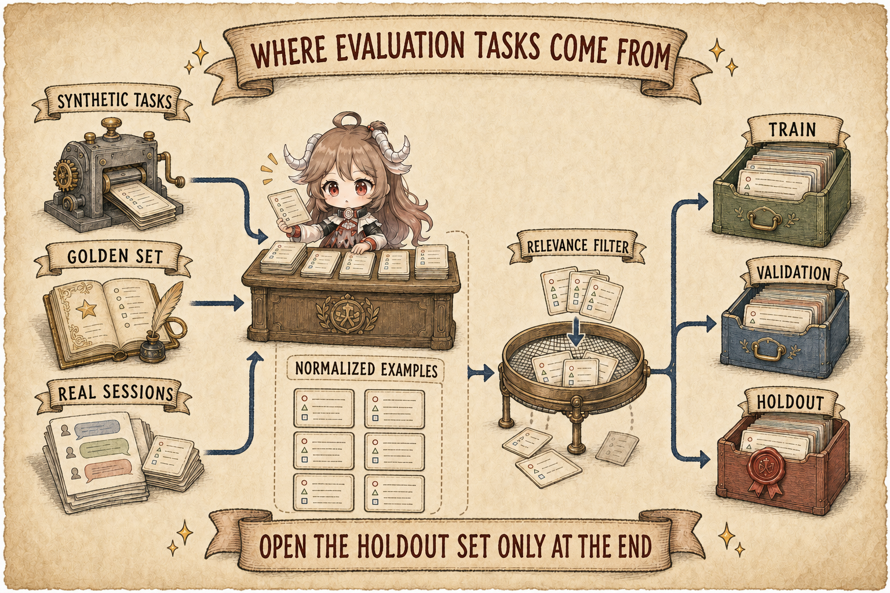
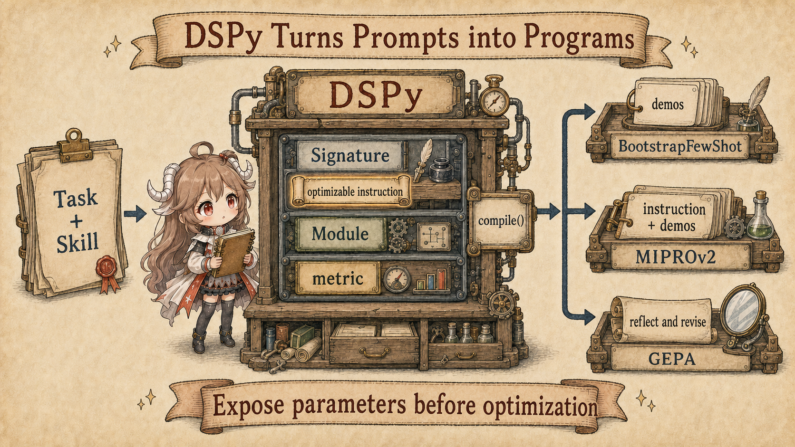
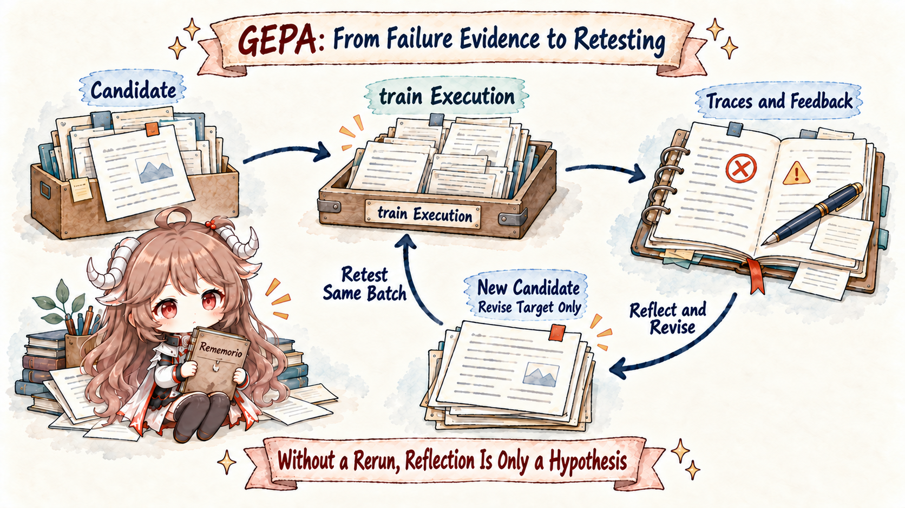
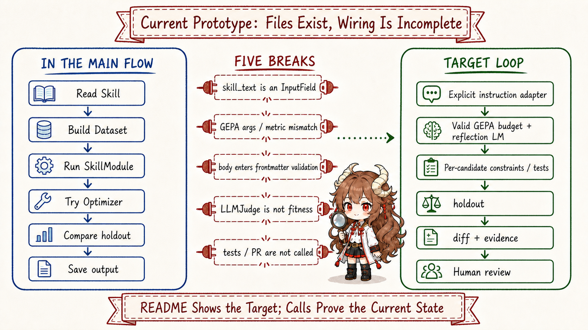

Continue the scenario from article one. An agent fixes a failed test. Background review notices that this repository must run a generator before its unit tests, so it writes that procedure into a skill. The next time a similar task arrives, the agent loads the new skill and succeeds. It is tempting to say it learned.
The success may have come from somewhere else. The second task could be easier. The model may have chosen the right tool by chance. The previous run may already have repaired the environment. Or the new skill may simply be longer and repeat more words from the task. Without fixed tasks, a consistent scoring rule, and examples kept out of optimization, "this run succeeded" does not establish "the rewrite worked."
That is the join between the two articles. Article one covered runtime learning: what a completed turn should preserve in memory or skills. This article covers offline evolution: given an existing skill, how do we generate candidates, inspect failures, compare versions, and stop an unproven change before delivery?
Separate method, implementation, and experiment evidence. The DSPy paper explains how declarative LM calls become compilable programs. The GEPA v2 paper presents a reflective method for evolving textual parameters. The fixed Hermes Agent Self-Evolution source shows an attempted integration for skills. The repository's Phase 1 report records a small DSPy experiment. None substitutes for another: paper results are not Hermes integration results, and a README roadmap is not the current call path.
Read forward with five questions:
- If one successful run is not enough, where do evaluation tasks and success criteria come from?
- What does DSPy expose as an optimizable parameter, and is DSPy itself one algorithm?
- What do BootstrapFewShot, MIPROv2, and GEPA change?
- Why does GEPA read traces and preserve candidates that are strong on different tasks?
- Which path does the current Hermes source actually run, and which pieces remain target architecture?
1. Two clocks answer two different questions
Runtime learning is fast. A completed turn can trigger background review, and a curator can maintain the skill library over a longer idle interval. Its input comes from real use, which keeps it relevant, but each experience has one particular context and does not provide a fair comparison by itself.
Offline evolution is slower. It freezes a baseline, gives the same tasks to multiple candidates, searches on training and validation examples, and opens the holdout set only at the end. It gives up immediacy for comparability. Skills connect the clocks: runtime experience supplies targets and task clues; offline evaluation supplies evidence that a version deserves to return to runtime.
| Question | Runtime learning | Offline evaluated evolution |
|---|---|---|
| Main input | Completed conversation, tool results, user preferences | Frozen skill, evaluation examples, execution traces |
| Core decision | What is worth preserving? | Which rewrite improves repeatable performance? |
| Timescale | After a turn or during idle maintenance | A separate optimization run |
| Main risk | Turning an accident into durable knowledge | Overfitting the benchmark or rewarding a bad proxy |
| Responsible output | A memory or skill candidate | A reviewable diff, metrics, and delivery candidate |
Self-evolution is therefore not a model continuously rewriting itself in the background. A safer model is a fast path that collects experience and a slow path that validates revisions, with explicit version boundaries wherever they exchange an artifact.
2. Six concepts define what evaluation compares
Suppose we want to improve a code-review skill. The baseline asks for correctness, security, and tests but often misses resource leaks. Offline evolution should not begin with "rewrite this better." It first turns the problem into six traceable objects.
| Concept | In this example | Why it exists |
|---|---|---|
| Artifact | The current SKILL.md body | Names the versioned object being changed |
| Eval example | Code to review plus a rubric that requires finding a leak | Separates task input from the success criterion |
| Rollout | One model execution using one skill candidate on one task | Exercises every candidate through the same interface |
| Trace + feedback | Execution, output, score, and an explanation of the miss | Locates why the candidate failed |
| Candidate | A rewritten skill prompt | Keeps multiple versions available for search |
| Holdout | Review tasks never used to generate candidates | Tests whether the system learned a rule or memorized tasks |
The Hermes repository represents one task as an EvalExample with task_input,
expected_behavior, difficulty, category, and source. EvalDataset divides examples
into train, validation, and holdout. The data shape is visible in
dataset_builder.py.
expected_behavior is not one exact answer. It is a rubric that states what a good result must do
or must not miss. That is more appropriate for open-ended agent work than string equality. It also means
that a bad rubric gives the optimizer a precise but wrong destination.
3. Where evaluation tasks come from: build the ruler first

3.1 Synthetic tasks bootstrap coverage; they do not become truth automatically
With no history, SyntheticDatasetBuilder gives the full artifact to a model and asks it to
generate tasks, expected behavior, difficulty, and category, then randomly splits the result. This can
start evaluation for a new skill quickly. The path is in
SyntheticDatasetBuilder.generate.
Its blind spot follows from its input. The task generator reads the old skill, so it can easily restate concerns the old skill already contains while missing failures the old skill never recognized. Synthetic examples are useful bootstrapping data, not sufficient proof. Important skills still need human golden cases or tasks with executable checks.
3.2 Real sessions supply a task distribution, not automatic answers
External importers read local Claude Code, Copilot, and Hermes sessions. A cheap keyword filter narrows the
messages, then a model scores relevance and creates fresh expected behavior. The two-stage filter is in
RelevanceFilter;
source aggregation and splitting are in
build_dataset_from_external.
In other words, real sessions mostly contribute realistic task inputs. They do not turn the historical assistant response into a golden answer. That boundary is useful: the old response may be the exact failure the skill should repair, so provenance alone cannot certify it.
3.3 Holdout answers one question: did you learn the rule or the tasks?
Training examples drive proposals. Validation examples compare candidates during search. Holdout examples are used once after a candidate has been chosen. If the system keeps revising the skill in response to holdout scores, the holdout has become another validation set. A credible run preserves data versions, split seeds, and baseline results so the final comparison cannot be repeatedly rehearsed.
4. Before GEPA, identify what DSPy makes optimizable
We now have tasks and a ruler, but one interface is still missing: what is the optimizer allowed to change? If an application concatenates one long prompt string and sends it directly to a model, a low score does not tell an optimizer which text is the task contract, which text is runtime input, or how a revision should be installed back into the program.
DSPy addresses that middle layer. It is not one search algorithm. It is an LM programming framework: declare inputs, outputs, and task instructions; compose one or more calls into a module; then pass the program, examples, and metric to an optimizer. Prompt writing becomes compilation of a parameterized program.

4.1 What a DSPy compilation needs
Keep the code-review skill as the running example. The model receives the skill and code, then returns a review. DSPy does not begin with one ever-growing final prompt. It assigns four roles:
| Role | In the review example | Why it exists |
|---|---|---|
Signature | Skill and code are inputs; review is output; the docstring states the task | Fix the language contract |
Module | ChainOfThought runs that Signature | Fix call structure and control flow |
Example | One review task and its rubric | Provide a repeatable comparison |
metric | Score missed issues, false positives, and procedure following | Define what “better” means |
The crucial boundary is parameter visibility. DSPy stores task instructions on
Signature.instructions, and optimizers walk a Module's predictor tree to find parameters.
Official source distinguishes predictor objects that are discoverable Parameters from plain
Python attributes, which are not exposed automatically. See the
Signature instruction contract
and
Module discovery rules.
compile() is therefore not a magic call that makes a model smarter. It accepts an explicitly
structured student program, training examples, and a metric, then returns a copy with selected or revised
prompt parameters. Model weights can remain unchanged. This gives us the right source-review question for
Hermes: is the skill body a predictor instruction, or merely an input value?
4.2 The three optimizers do not change the same thing
The three names now form a progression instead of a flat algorithm list. Each can consume a DSPy program and evaluation data, but each searches a different space and learns from a different signal:
| Optimizer | Primary change | How evaluation guides it |
|---|---|---|
BootstrapFewShot | Select and insert demonstrations | Keep successful traces that satisfy the metric |
MIPROv2 | Combine candidate instructions and demonstrations | Propose candidates, then search combinations by validation score |
GEPA | Rewrite predictor instructions | Read traces and textual feedback, reflect on failures, and propose revisions |
The official BootstrapFewShot implementation installs qualified traces as predictor demos;
MIPROv2 proposes both instruction and few-shot candidates before searching their combinations.
See
BootstrapFewShot
and
MIPROv2 candidate generation.
GEPA also changes instructions, but it asks an LM to read failure evidence before writing the next one.
We can now explain why that difference matters.
5. GEPA's key move is changing prompts with the reason for failure
Only now do we need GEPA. The paper keeps model weights frozen and searches over natural-language prompts. Each iteration selects a parent candidate, runs it on a minibatch, collects traces, scores, and textual feedback, then asks a reflection model to diagnose failures and propose a new prompt. Evaluated candidates return to the pool and the loop continues.

5.1 Traces turn "wrong" into "wrong at this step"
A score of 0.4 does not reveal whether a failure came from tool choice, ordering, a missed constraint, or output format. A trace exposes intermediate decisions. Textual feedback can add, for example, "the correct tool was called, but the agent did not use the fallback after an empty result." GEPA's reflective mutation reads that context and targets the failure mode. The algorithm and feedback interface are described in Section 3 of GEPA v2.
5.2 Why not mutate the overall winner forever?
One candidate may excel at security review, another at API compatibility, and another at output format. Keeping only the highest average score can discard those local strengths too early. GEPA tracks a Pareto set based on per-example performance: it samples an example, then chooses among candidates that are strong on that example. Specialized candidates can remain parents instead of being erased by one temporary champion.
That is why Pareto appears in the name. It protects search diversity under a limited rollout budget. The paper's ablation finds that always mutating the current best is weaker than Pareto selection. It also notes that merging candidates is not always beneficial when prompt components depend on each other.
6. How GEPA reaches a Hermes skill through DSPy
One final layer must be separated. GEPA now has an independent
official implementation.
It represents candidates as named text components, then asks an adapter to execute them, collect
per-example scores and traces, and build reflection data. The engine does not inherently know about DSPy
Signatures or a Hermes SKILL.md; an integration layer must translate those concepts.
dspy.GEPA is that translation layer. It walks the student program's predictors and turns each
pred.signature.instructions into a seed component. The DSPy adapter runs modules, captures
traces, calls the metric, and installs GEPA's selected text into a new program. See
dspy.GEPA.compile
and the standalone
GEPA adapter contract.
This boundary determines what evolves.
Standalone GEPA can optimize arbitrary text through a custom adapter. The standard dspy.GEPA
path, however, seeds candidates from DSPy predictor instructions. A skill body supplied as a normal
runtime input does not become a rewritten parameter merely because it passes through the same forward call.
The Hermes CLI lays out ten intended stages: find a skill, prepare data, validate the baseline, configure
DSPy, run GEPA, extract a revision, validate constraints, compare on holdout, report, and save. The main
entry point is
evolve_skill.py.
SkillModule wraps a skill as a DSPy module. Each forward call supplies the skill body and task
input to a ChainOfThought predictor and returns the model output. The useful abstraction is a
repeatable function from one skill and one task to one result. See
SkillModule.
| Required stage | Evidence to preserve | Correct failure behavior |
|---|---|---|
| Freeze baseline | Original skill, source version, model configuration | Do not silently move the baseline |
| Prepare evaluation | Task sources, rubrics, split, and seed | Stop if the ruler is not credible |
| Reflect and mutate | Parent, examples, traces, feedback, and proposal | Keep enough context to explain regressions |
| Gate candidates | Structure, size, tests, and benchmark results | Reject any hard-constraint failure |
| Compare holdout | Baseline and candidate on the same unseen set | Do not deliver without improvement |
| Human delivery | Diff, metrics, limitations, and rollback version | Never overwrite a live skill directly |
This table is the ruler for source review. A repository can contain a class for every stage without moving values through a complete evidence chain. "Implemented" is a statement about actual parameters, return values, gates, and delivery, not about filenames.
7. How far the current source goes: a prototype, not a closed loop

Start with what exists. The repository can discover and parse skills, generate or import evaluation data, construct a DSPy module, invoke an optimizer, compare baseline and candidate on holdout, and save metrics with before-and-after artifacts. That is a real orchestration and data skeleton with unit tests around several components.
At fixed snapshot 0a929e3, however, several connections prevent it from being an end-to-end delivery loop.
7.1 The skill text is not clearly registered as a GEPA prompt parameter
SkillModule stores the body in an ordinary Python attribute, self.skill_text, then
supplies it as the skill_instructions input field during forward. The orchestration later
assumes optimized_module.skill_text contains a GEPA rewrite. The current source does not show a
bridge that registers this plain attribute as a DSPy prompt parameter. From this call path alone, we
cannot establish that GEPA rewrites the skill itself rather than predictor prompt state.
7.2 The GEPA constructor does not match even the minimum dependency
The repository declares dspy>=3.0.0 without an upper bound, while the orchestration calls
dspy.GEPA(metric=skill_fitness_metric, max_steps=iterations). This is not only drift in a later
release. DSPy 3.0.0 already had no max_steps argument: it required exactly one of
auto, max_full_evals, or max_metric_calls, plus an explicit
reflection_lm. Compare the
Hermes dependency,
call site, and
DSPy 3.0.0 constructor.
Hermes also supplies a three-argument metric, while DSPy 3.0.0 requests predictor feedback with
five values: gold, prediction, full trace, predictor name, and predictor trace.
The configured optimizer_model is printed but never passed as GEPA's reflection LM. Under the
repository's own minimum DSPy version, the GEPA path therefore fails before reflection begins; the broad
exception handler then switches execution to MIPROv2.
7.3 Structure validation receives a body but requires frontmatter
load_skill separates frontmatter from the body. The main flow passes skill["body"]
and evolved_body into validate_all. Yet _check_skill_structure requires
its input to begin with --- and contain name: and description: near the
start. That condition necessarily fails for the current caller. See
validate_all
and
_check_skill_structure.
7.4 A rich LLM judge exists, but optimization receives keyword overlap
fitness.py defines an LLMJudge with correctness, procedure following,
conciseness, and textual feedback. That resembles the explanatory feedback GEPA can use. The function
actually passed to dspy.GEPA(metric=...), however, computes word overlap between expected
behavior and output and returns one float. Compare
LLMJudge
with
skill_fitness_metric.
The proxy is fast, but it rewards repeating rubric vocabulary rather than necessarily completing the task. It also does not return the rich failure explanation through this metric path. That is an interface gap between the current search objective and the paper's reflective method, not a small matter of adjusting weights.
7.5 Tests, per-candidate gates, and PR delivery remain disconnected
ConstraintValidator contains run_test_suite, and configuration includes
run_pytest and create_pr. The main flow does not call the test function and does not
create a PR. Constraints run only after compilation on the final extracted body; they do not gate every
candidate entering GEPA's pool. The success path writes files and metrics.json under
output/. See
run_test_suite
and the
output stage.
7.6 Broad fallback conflates unavailable GEPA with a failed GEPA run
The main flow catches any Exception from GEPA compilation and falls back to MIPROv2. That makes
a demonstration more likely to continue, but it can relabel a real integration error as "GEPA not
available." A rigorous run should fall back only for an explicit capability check and preserve all other failures.
This does not make the repository valueless. Session import, sample structure, skill wrapping, holdout comparison, and constraint classes form a useful base. The accurate status is narrower: a Phase 1 prototype exists, while end-to-end GEPA skill rewriting, hard gating, and reviewed delivery are not established by the current call path.
8. How to read “39.5% improvement”: ask what the experiment changed
The Phase 1 report describes one arxiv-skill experiment using MiniMax M2.5. Seven synthetic examples
yielded three training and two validation examples. The optimizer was DSPy BootstrapFewShot and the metric
was keyword overlap. Validation example one moved from 0.408 to 0.569, reported as +39.5%; example two
stayed at 0.374. The average moved from 0.391 to 0.472, or +20.7%. Configuration and results appear in
generate_report.py.
This was not a GEPA experiment, and it did not rewrite the skill. BootstrapFewShot selected strong execution traces as demonstrations and augmented the module. The supported conclusion is correspondingly narrow: on a tiny synthetic set and proxy metric, a DSPy-wrapped module scored higher after demonstration augmentation. It does not prove that GEPA is wired, or that a rewritten Hermes skill improves real tasks.
| Evidence | What it tests | What it cannot establish |
|---|---|---|
| GEPA paper | Prompt evolution and ablations across six task families | The Hermes integration gets the same gains |
| Phase 1 report | One skill, tiny synthetic set, BootstrapFewShot, keyword metric | GEPA ran or rewrote the skill body |
| Current source | Data, orchestration, comparison, and constraint prototypes | Tests, PRs, and per-candidate gates form an automatic loop |
The GEPA paper reports stronger evidence for the method itself: across six tasks, roughly 6% average and up to 20% improvement over GRPO, with up to 35 times fewer rollouts, plus more than 10% average improvement over MIPROv2. Those numbers make the method worth studying. Their evaluation target is the paper's benchmarks, not this Hermes prototype. Separating the layers makes the project's next work clearer.
9. What remains before the prototype becomes a credible loop
The path forward does not need more terminology. It needs every link in the evidence chain to carry through:
- Freeze the artifact. Record source commit, skill hash, model, and dataset configuration so the baseline can be replayed.
- Make the skill a real optimizable prompt parameter. Use DSPy's supported instruction or signature mechanism instead of relying on an ordinary attribute to mutate implicitly.
- Return the right objective. Prefer executable checks; use rubric judges for open tasks and pass actionable textual feedback into GEPA.
- Gate every candidate first. Validate full frontmatter, size growth, tests, and caching boundaries before a candidate enters the pool.
- Keep failures in the right layer. Do not let a different optimizer hide a failed GEPA integration; fallback should be an explicit run mode.
- Open holdout once. Report per-example outcomes and repeated runs or uncertainty, not only a percentage from one example.
- Deliver a diff, not an overwrite. Package candidate, baseline, metrics, failures, and a PR for human approval.
- Wait for a future runtime boundary. A passed skill should refresh safely, not mutate the stable prompt prefix halfway through a conversation.
Then the series closes. Runtime use discovers experience worth preserving. Offline evaluation treats a skill as a versioned artifact, runs an experiment, and returns an approved revision for future sessions. New failures become evidence for the next evaluation cycle instead of triggering immediate self-rewrites.
10. Conclusion: self-evolution strengthens evidence, not just text
Return to the opening question. Writing "run the generator first" into a skill does not establish an improvement. The revision earns that name only when old and new versions face the same independent tasks, the new one performs better on the right objective, and it preserves structure, tests, and runtime boundaries.
Runtime discovers experience.
Evaluation fixes the question.
Traces and feedback explain failure.
The candidate pool preserves different strengths.
Constraints and holdout prevent self-persuasion.
Human review decides delivery.Hermes Agent provides the first clock: how experience enters durable state after delivery. GEPA provides a method for the second: evolve prompt candidates through execution, reflection, and selection without updating model weights. Hermes Agent Self-Evolution puts the engineering interface between them on the table. Its current value is not that self-evolution is finished, but that the source makes the next gap inspectable.
Source and Paper References
- Fixed NousResearch/hermes-agent-self-evolution source snapshot
- Project README and phase status
- Phase 1 goals, data strategy, and completion gates
- EvalExample, splits, and synthetic generation
- Session relevance filtering and external dataset construction
- SkillModule
- Skill evolution orchestration
- LLM judge and active fitness metric
- Constraints and test-suite function
- Phase 1 experiment configuration, results, and safety claims
- DSPy: Compiling Declarative Language Model Calls into Self-Improving Pipelines
- Fixed official DSPy implementation snapshot
- DSPy 3.0.0 GEPA constructor
- GEPA: Reflective Prompt Evolution Can Outperform Reinforcement Learning
- GEPA v2 paper PDF
- Fixed official GEPA implementation snapshot